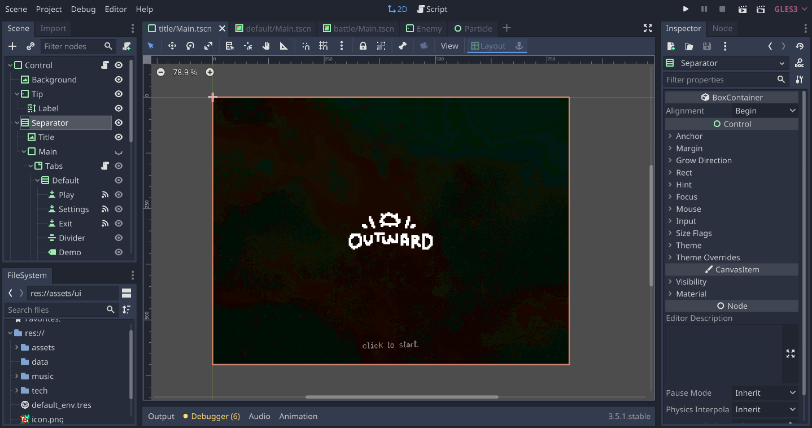
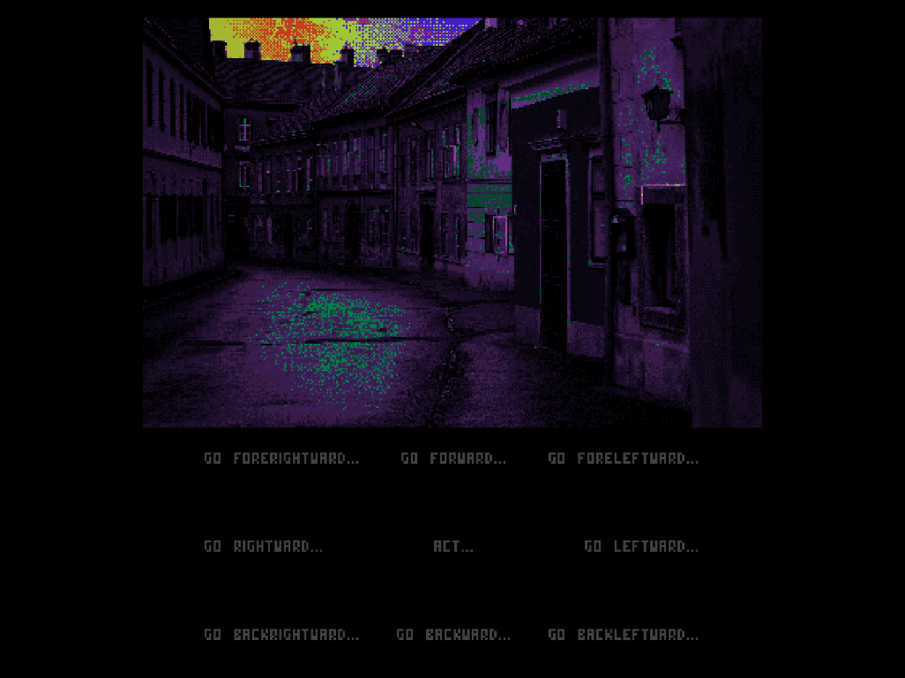
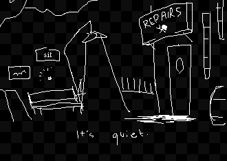
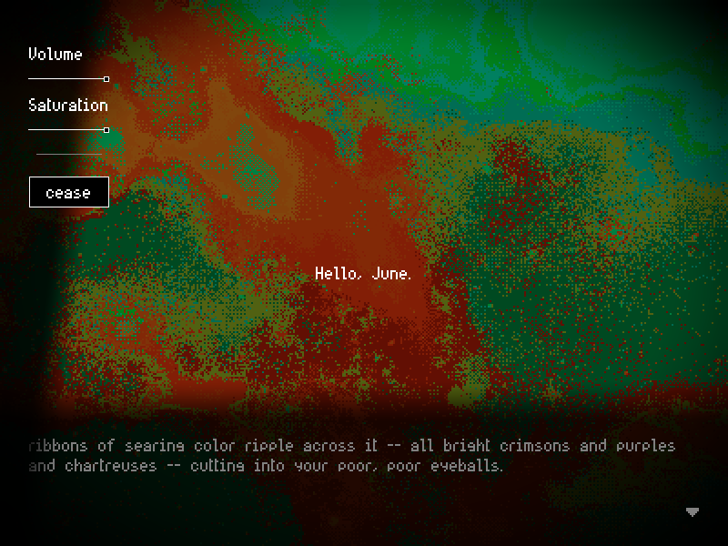
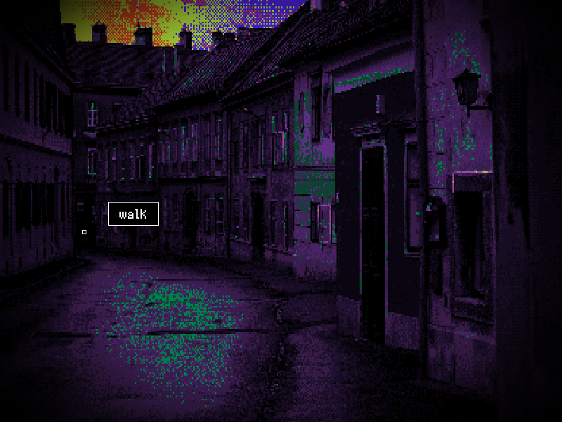
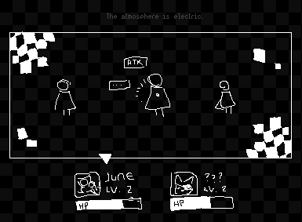
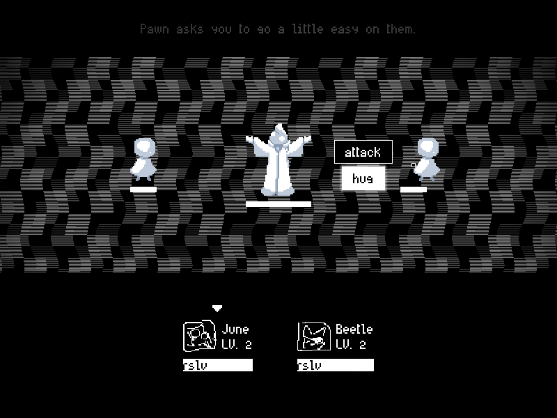
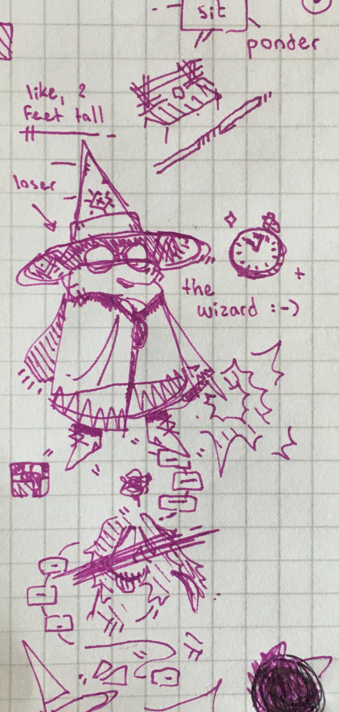

a first look
(january 22nd, '23)
Hello! Welcome to my video game! Murumart is making a devlog for his game (pssst go check it out) and I want to make one too.
If you've read above, you already know more-or-less what this is. It's a game about the end of the world, born out of an idea I concieved on one night I was feeling desperately sad, which I am going to turn, through some combination of blood, sweat, tears, and the Godot documentation, into a "Video Game".

This project is still in pretty basic shape. But a lot of work has been done, so let's go through some stuff step-by-step. First, let's take a look at the movement screen – this thing went through a bunch of reworks!
BTW, you can click on the images to make them bigger. For your viewing pleasure.

This was the first incarnation. A lot of the early UI (some of which isn't on display here, sorry) was inspired quite a bit by the style of this post by tofupixel – all grayscale and in simple bordered boxes. I built it purposefully clunky and (hopefully) a little charming in that clunkiness.
Pressing the "ACT" button in the middle would take you to a different tab: a list of the actions you could perform in a location (looking around, greeting people, etc.), and would zoom the location display a bit. Honestly, I still think this UI is quite cute. But coding around it got difficult very quickly, especially once other stuff started to get involved. I wanted something simpler.
For the next iteration, I started from scratch. The location display now took up the entire screen, and all actions (including movement actions) were listed together at the bottom of the screen. This simplified code massively, but it didn't really feel like fun UI to use.

I went back to the drawing board again, and I came up with something I'm very happy with!
All of it is completely functional, too!


I took a massive swerve in terms of design. A lot of the UI switched from minimalistic little bordered boxes to overlayed gradients. All actions are now divided up into "centers" (a little dot positioned over the thing you're acting on), and are arrayed around them in a circle. I can control the position, radius, rotation, and separation via code. Super cool!
I'm trying to push radial UI super hard pretty much anywhere I can fit it. You'll see more of it in the battle screen. Circles and spirals are a huge part of this game's visual motifs and story, and I'm trying to bring them to the forefront as much as possible. Also, I have a really cool scene in mind for the end (if it works out) that would need the radial UI.
Also Godot doesn't have radial containers and I made them myself and I'm quite proud of it. Valid?
OK LETS take a look at the battle screen now. Which I have redesigned. Again.
"June," you say, "June you just did this. June I just read about you doing this in your last blog post." First off,
{kind=link}

Second, I've decided that the game will have a party system. The old battle screen did not, in fact, have any kind of party display. This is commonly referred to in game development as a "massive fuckup". So, I'm redesigning it, again.
But I'm keeping the Earthbound backgrounds. They were cool.

Again, this is still in basic shape, but I'm quite happy with it! And it's pretty damn functional, too. Similarly to Undertale, you can either outright kill enemies or figure out how to spare them I mean make them forgive you. There's defintely a lot more I want to add to this screen, but that'll come later.
Right now I'm trying to plot out a lot of the first section of the game. Stuff is coming together, but it'll take a while. Please bear with me in this important part of the game-making process.
Uhh that's about all I want to show you for now. Have a bonus doodle. Come back next time, whenever that is.
